桃に害虫。
2022/04/10
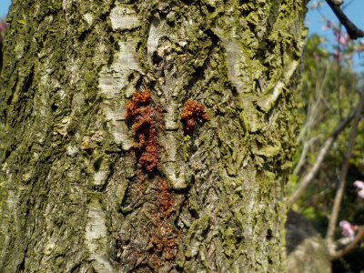
木から木くずが出ていました。食べられてますね。
今まで桃の害虫は無視していましたが、今後は少し薬を使うことにしました。
2022/04/10

木から木くずが出ていました。食べられてますね。
今まで桃の害虫は無視していましたが、今後は少し薬を使うことにしました。
2021/07/18
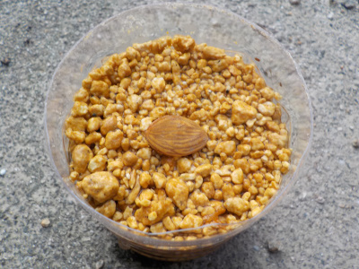
遊びで1粒だけ種蒔きしました。
前回は成長しないで枯れたんですが、今回はどうなるでしょう。
殻は採らない方が良かったかな？
2021/07/11
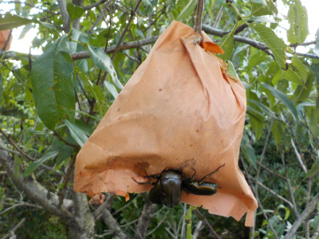
何か特別な匂いがするんでしょうね。
嫌な感じするなーって思ったら、やっぱり桃がダメになってました。
汁が出てるのでそれ目当てでカナブンが来るし、コバエもが来るのでカエルも来たみたい。
2021/07/10
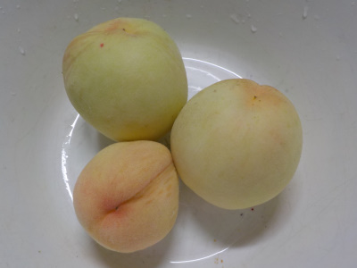
スーパに、地元の生産者さんが出品されている桃がありました。
たぶん我が家の桃の食べごろになっているだろうと思い収獲しました。
今年の桃はちょっと小さい。
まだ匂いが少ないし固そうなので、少し置いてから食べます。
2021/05/05
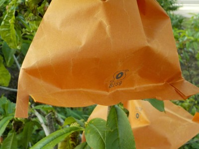
まだ実は小さいですけど、害虫が桃に穴を開けてました。
これ以上ダメにされないように袋掛けしました。
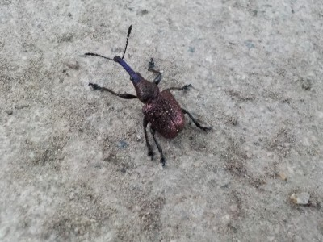
犯人はこいつです。
来年からはゴールデンウィークの前半に袋を掛けようと思います。
2021/03/28
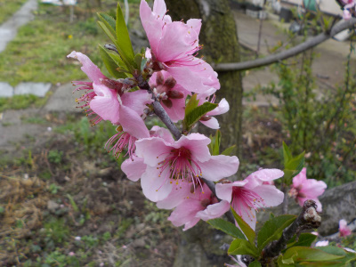
今年は何個食べれるかな。
花より実が気になります。
2020/09/27
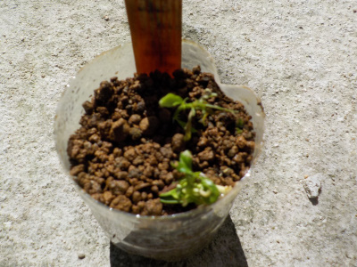
種蒔きした桃が発芽しました。
発芽に2月かかりました。
冬眠しなくても発芽するみたいです。
2020/09/13
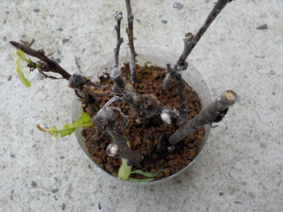
桃の葉っぱが何かに食べられたので、多分挿し木は失敗です。
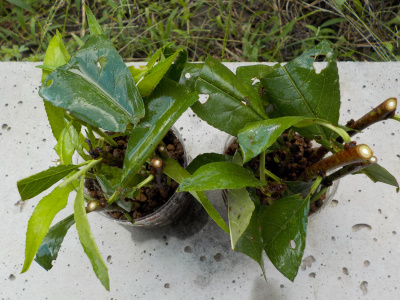
そしてまた挑戦。
今回は、一つのペットボトルだと全滅する可能性があるので二つにしました。
虫が混入する可能性があるので、葉っぱに殺虫剤をふりました。
これから寒くなるので成長しないかもしれませんが、春に芽が出るといいですね。
2020//08/13
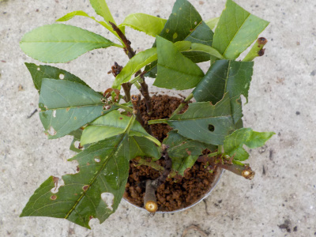
挿し木の時期は梅雨とか秋のケースが多いですが、もうちょっとしたら秋なのでいいかなと思い挿し木しました。
6月に挿し木してもすぐ真夏になるし、秋に挿し木しても冬になるんだったら別に真夏に挿し木しても問題ないんじゃないかと思いやりました。
遊びでやる分には効率とか関係なしで、思いついた時にするのが一番だと思います。
【桃TOP】
【果物TOP】
【園芸TOP】
2020/07/26
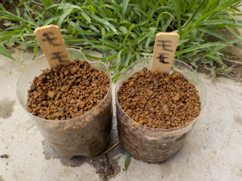
桃栗三年柿八年とかいいますがどうなんでしょうね。
家には3年以上前にホームセンターで買った桃の苗で、まだ実をつけていない木があったりします。
どっちが先に実が出来るかな。
以前の記事
2020/07/25
桃の種を採りました。
2020/07/18
桃を収獲しました。
2020/06/07
挿し木の桃に葉っぱがまだ残っています。
2020/02/15
桃の挿し木をしました。
2019/07/14
桃が不作でしたが、美味しいのが採れました。
2018/07/15
残った桃をまとめて収穫しました。
2018/05/26
桃に袋をかけました。
2016/05/15
桃の実が沢山付いてますけど。
2016/04/03
桃の花が満開です。
2013/03/31
桃の花は綺麗ですね。
桃は美味しい。